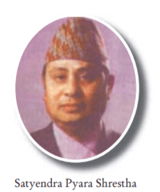

Biography:
Satyendra Pyara Shrestha was the 10th governor of Nepal.He was the governor
from Jan 18, 1995 to Jan 17, 2000 during the ruling period of King Birendra.
Signatue of Satyendra Pyara Shrestha can be seen on the currency of Rs 1,
Rs 2, Rs 5, Rs 10, Rs 20, Rs 25, Rs 50, Rs 100, Rs 250, Rs 500 & Rs 1000.
For the first time Rs 25 & Rs 250 were issued in Nepal.